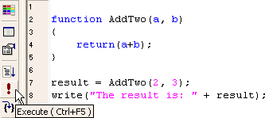

A function is a block with a (possibly empty) parameter list that is normally given a name. A function may use local variables. If you exit the function without a return statement, the value undefined is returned. Functions are first class objects and may be assigned to other variables. The number of arguments given when calling a function may not necessarily correspond to the number of arguments in the function definition; a named argument in the definition that does not have a matching argument in the call will have the value undefined (that can be implicitly cast to false). Within the function, the arguments may also be accessed through the arguments object; this provides access to all arguments using indices (e.g. arguments[0], arguments[1], ... arguments[n]), including those beyond the number of named arguments. (While the arguments list has a .length property, it is not an instance of Array; it does not have methods such as .slice(), .sort(), etc.)
